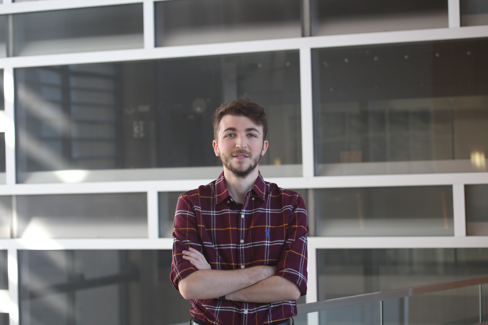

Decoding Spinal Cord Injury at the Single-Cell Level
I'm Mustafa Özturgut, a PhD student at Texas A&M University studying how neutrophils communicate after spinal cord injury using single-cell RNA sequencing.
● Spinal Cord UMAP — Cluster Legend
About Me
Passionate researcher bridging neuroscience, immunology, and computational biology

I am a PhD student in Biology at Texas A&M University (Hardin Lab), investigating cell-cell communication in spinal cord injury using single-cell RNA sequencing. My work focuses on understanding the ligand–receptor signaling networks between Arg1+ and Arg1− neutrophils — exploring how these cells may adopt anti-inflammatory vs. pro-inflammatory activation states after injury. I combine tools like CellChat, CellCall, LIANA, NicheNet, and PROGENy to build a multi-tool consensus picture of intercellular communication.
Before my PhD, I earned a B.S. in Psychology (3.93 GPA) from Texas A&M University–San Antonio and conducted behavioral neuroscience research on honeybee collective behavior and frustration paradigms at the ALAN Research Laboratory. I also studied at TOBB University of Economics and Technology in Ankara, Turkey (3.52 GPA). I speak Turkish natively and English professionally.
Skills & Techniques
Computational and experimental methods spanning bioinformatics, neuroscience, and data analysis
Single-Cell Genomics
Cell Communication
Pathway & TF Analysis
Programming
Visualization
Behavioral Neuroscience
Research Projects
From cell-cell communication to honeybee collective behavior
Ligand–Receptor Networks Associated with Neutrophils After Spinal Cord Injury
Investigating which incoming ligand–receptor signals differ between Arg1+ (candidate anti-inflammatory) and Arg1− (candidate pro-inflammatory) neutrophils after spinal cord injury. Using three independent scRNA-seq datasets (Lee, Wang, Qin) and a multi-tool consensus approach: CellChat and CellCall for intercellular communication inference, PROGENy/decoupleR for pathway activity scoring, BARTsc for transcription factor prediction, NicheNet for ligand activity analysis, and GSVA for pathway enrichment.
Sleep Cycle of Drosophila melanogaster
Collaborated with researchers to study the sleep cycle of fruit flies. Developed research protocols, designed behavior studies, maintained and screened Drosophila stocks, conducted data collection sessions, and performed statistical analysis using MATLAB.
Successive Negative Contrast in a Superorganism
The first study to explore negative contrast at the colony level in honeybees (Apis mellifera). Manipulated rewards available to colonies and measured changes in recruitment to sucrose feeders, investigating how individual foraging decisions translate into collective superorganism behavior.
Mankind vs Machine: Technology Induced Frustration
Validating the CAPTCHA task as a behavioral measure of frustration. Participants who abandoned distorted-letter tasks early showed higher sensitivity to reward downshifts — a pattern commonly associated with the emotion of frustration.
Education & Experience
A journey from Turkey to Texas, from psychology to computational biology
Doctor of Philosophy (PhD) in Biology
Hardin Lab — Single-cell RNA-seq analysis of spinal cord injury. Teaching Assistant for BIOL111 (Intro to Biology) and BIOL401 (Critical Writing in Biology).
Research Assistant — Drosophila Sleep Research
- Developed research protocols and behavior study designs
- Maintained and screened Drosophila stocks
- Conducted data collection and MATLAB statistical analysis
- Contributed to weekly lab meetings and research publications
Bachelor of Science in Psychology — 3.93/4.00 GPA
Tau Sigma National Honor Society • Student Government Association • TAMUSA Psychology Club
Research Assistant — ALAN Research Laboratory
- Studied successive negative contrast in honeybee superorganisms
- Validated CAPTCHA task as a frustration measure
- Designed and tested apparatus for invertebrate learning studies
Office Assistant
- Managed social media and designed posts, brochures, and flyers
- Organized international events
- Grew social media following and engagement by ~20%
Bachelor's in Psychology — 3.52/4.00 GPA
Psychologic View Community member
Enrollment Assistant
Worked with enrollment management to collect and analyze student lifecycle data from inquiry through graduation.
Super Game Master
Community management and moderation for online games.
Presentations & Awards
Conference posters, honors, and certifications
Ligand–Receptor Networks Associated with Neutrophils After Spinal Cord Injury
Psi Chi — International Honor Society in Psychology
Carlos & Malu Alvarez Endowed Scholarship
Animal Behaviour and Welfare
Introduction to Human Behavioral Genetics
Consumer Neuroscience & Neuromarketing
Philosophy of Cognitive Sciences
Leadership & Organizations
Student government, research communities, and social impact
TAMUSA Psychology Club
Texas A&M–SA Student Government Association
TPÖÇG — Turkish Psychology Students Working Group
Wrote Erasmus+ and international projects on nature sustainability and entrepreneurship.
TOBB ETÜ Psychologic View Community
Organized "Looking at Violence" and "Looking at Emotions" conferences.
TPÖÇG — Social Impact Initiatives
Coordinated shelter donations, nursing home visits, sign language training, and book collections for village schools.
Yarının Kampı — Village School Project
Taught 83 students (grades 1–8) at a rural village school in Mersin, Turkey.
Get in Touch
Interested in collaboration, questions about my research, or just want to connect?